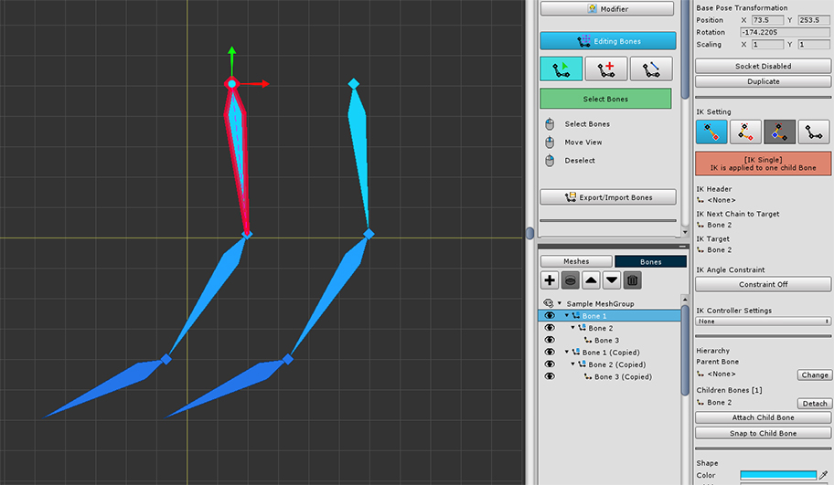

AnyPortrait > Manual > Duplicate Bone / Snap to a Child
Duplicate Bone / Snap to a Child
1.1.8
Duplicate a Bone

(1) Select the bone to duplicate.
(2) Press the Duplicate button in the bone's Properties UI.
(3) In the Duplicate dialog, set the Positon offset and whether to duplicate the child bones together.
(4) Press the Duplicate button in the dialog.

You can see that the bone is duplicated.
The duplicated bone is copied along with the IK settings.
Snap to a Child Bone

When adding bones, sometimes, a parent bone and child bones are placed apart like the image above.
In many cases, parent bones do not have to be linked to child bones.
However, users may want to make the end of a parent bone connected to the child bone for convenient work or for reasons such as IK.
This can be easily set using the Snap function.
Let's connect the parent bone to the child bone.

(1) Select the parent bone.
(2) Press the Snap to Child Bone button.
If there is only one child of the selected parent bone, at this step, the parent bone and the child bone are connected.
Conversely, if there are two or more child bones, a dialog will appear to choose which child to connect to.
(3) Select the child bone to connect.
(4) Press the Select button.

You can see that the parent bone is rotated and the length changes to connect to the child bone.